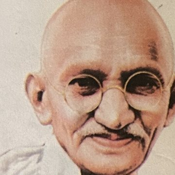
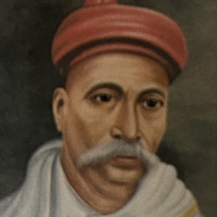
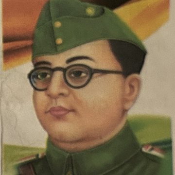
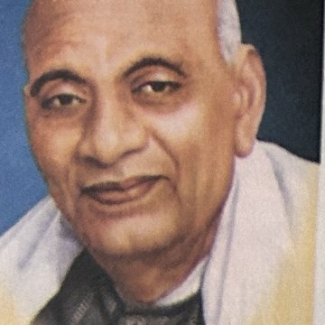
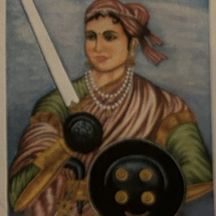
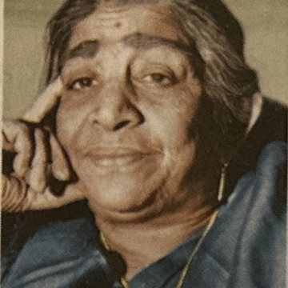

Our Government · Delhi and Mumbai · Our Leaders · Transport — every question below comes straight from the textbook, school worksheets, or notebook pages. Nothing has been invented.
*also asked in a Revision sheet #also asked in a school Worksheet
Answers are hidden by default. Tap "Show answers" under each chapter to reveal that chapter's answers only.
- New Delhi is the capital of India.
- The Central Government is the head of the country.
- There are 28 states in India.
- Union Territories are controlled by the Central Government. *
- Delhi is situated along the banks of the River Yamuna. #
- The official name of Delhi is the National Capital Territory of Delhi. #
- The Central Secretariat building has two blocks.
- Foreign offices are called Embassies or High Commissions.
- Connaught Place is one of the largest business spots.
- Malabar Hills present the most beautiful view of Mumbai. *
More practice blanks, now confirmed from Anisha's own completed worksheet:
- Mumbai is the richest city of India and an important port.
- Chandni Chowk is one of the oldest and busiest markets in Delhi.
- Ganesh Chaturthi is an important festival in Mumbai.
- The climate of Delhi is extreme.
- Mahatma Gandhi was popularly known as Bapu. #
- Sarojini Naidu was given the title Nightingale of India. #
- Lokmanya means respected by all. *
- The slogan "Jai Hind" was used by Netaji Subhash Chandra Bose.
- Sarojini Naidu is known as the Nightingale of India.
- Tilak started two weekly newspapers, Kesari (in Marathi) and Mahratta (in English).
- Rani Lakshmi Bai was married to Gangadhar Rao, the King of Jhansi.
- Bullock carts and bicycles are mostly used by people living in rural areas.
- Air transport is the fastest means of transport.
- Animal transport has been a means of land transport since ancient times.
- Ships are used to transport huge quantities of goods to other countries. *
| States | Capitals |
|---|---|
| 1. Nagaland | (c) Kohima |
| 2. Jharkhand | (e) Ranchi |
| 3. Sikkim | (a) Gangtok |
| 4. Haryana | (b) Chandigarh |
| 5. Gujarat | (d) Gandhinagar |
Answer: 1–c, 2–e, 3–a, 4–b, 5–d
Set A #
| Column A | Column B |
|---|---|
| 1. Raj Ghat | (c) Samadhi of Mahatma Gandhi |
| 2. Marine Drive | (e) Queen's Necklace |
| 3. Sarojini Naidu | (a) Nightingale of India |
| 4. Sardar Patel | (b) Iron Man of India |
| 5. Bal Gangadhar Tilak | (d) Lokmanya |
Answer: 1–c, 2–e, 3–a, 4–b, 5–d
Set B
| Column A | Column B |
|---|---|
| 1. Raj Ghat | (c) Samadhi of Gandhi |
| 2. Shanti Van | (a) Memorial of Nehru |
| 3. Akshardham Temple | (d) Delhi |
| 4. Marine Drive | (e) Queen's Necklace |
| 5. Textile Mills | (b) Mumbai |
Answer: 1–c, 2–a, 3–d, 4–e, 5–b
Set A
| Column A | Column B |
|---|---|
| 1. Bal Gangadhar Tilak | (b) Lokmanya |
| 2. Sarojini Naidu | (d) First woman governor of India |
| 3. Sardar Patel | (a) Iron Man of India |
| 4. Subhash Chandra Bose | (c) "Give me blood, I will give you freedom" |
Answer: 1–b, 2–d, 3–a, 4–c
Set B
| Column A | Column B |
|---|---|
| 1. Rani Jhansi Bahini | (b) Captain Lakshmi Sahgal |
| 2. Jai Hind | (c) a slogan |
| 3. Subhash Chandra Bose | (d) born in Odisha |
| 4. Indian National Army | (a) Azad Hind Fauj |
Answer: 1–b, 2–c, 3–d, 4–a
Road signs — Help Box matching
| Sign | Meaning (Help Box) |
|---|---|
| Zebra crossing | |
| No U-turn | |
| Railway crossing | |
| No pedestrian |
- India became an independent country on 15th August, 1947. → True
- The Prime Minister and other ministers of the Central Government live in Mumbai. → False — They live in New Delhi, the capital of India.
- The Central Government runs the whole country. → True
- There are 9 Union Territories in India. → False — There are 8 Union Territories in India.
- Bal Gangadhar Tilak is also known as 'Iron Man of India'. → False
- Mahatma Gandhi is called the 'Father of Nation'. → True
- Mahatma Gandhi studied law in America. → False
- The slogan 'Jai Hind' was used by Netaji Subhash Chandra Bose to encourage Indians. → True
- Vehicles carry people and goods from one place to another. → True
- We must not follow the road safety rules. → False
- Camel is called the 'Ship of the Desert'. → True
- We must not use zebra crossing to cross the road. → False
- Name the capital of India. — New Delhi
- How many States and Union Territories are there in India? — 36 (28 states + 8 Union Territories)
- Prime Minister of India — Shri Narendra Modi #*
- President of India — Smt. Droupadi Murmu #*
- Vice-President of India — C. P. Radhakrishnan *
- Home Minister of India — Shri Amit Shah #*
- Chief Minister of Maharashtra — Shri Devendra Fadnavis #
- Governor of Maharashtra — Shri Jishnu Dev Varma #
- What is the law-making body of the Central Government? — The Parliament
- Where does the President of India live? — Rashtrapati Bhawan
- Who looks after the country just like the head of the family? — Central Government
- Who looks after the Union Territories? — Central Government
- Where does the Governor live? — Raj Bhawan
- Who built Jantar Mantar? — Maharaja Jai Singh II *
- Which event was successfully hosted by the city of Delhi in 2023? — G20 Summit *
- Which national leader is also known as the 'Father of the Nation'? — Mahatma Gandhi
- Nightingale of India — Sarojini Naidu *
- Father of Nation — Mahatma Gandhi *
- What was Mahatma Gandhi's full name? — Mohandas Karamchand Gandhi *
- When did Rani Laxmibai die? — 1858
- What is the name of the women's army unit formed by Subhash Chandra Bose? — Rani Jhansi Bahini
Government
A governing body that looks after the welfare and safety of the people. It frames laws.
Central Government #
It is the government elected by the people to govern the country.
State Government
It is the government elected by the people to govern the state.
Union Territories #
Small parts of India that are directly controlled by the Central Government.
Transportation
It means to carry people and goods from place to place by means of vehicles.
Subway
It is an underground way to cross the road safely.
Level Crossing
It is a place where a railway line and a road cross each other.
| State / UT | Capital | Source |
|---|---|---|
| Haryana | Chandigarh | # |
| Karnataka | Bengaluru | # |
| Sikkim | Gangtok | #* |
| Punjab | Chandigarh | # |
| Maharashtra | Mumbai | # |
| Assam | Dispur | * |
| Nagaland | Kohima | * |
| Odisha | Bhubaneshwar | * |
| Goa | Panjim | * |
| Ladakh | Leh | * |
What is a Government? *
The government is a governing body that looks after the welfare and safety of the people.
Name any three Union Territories.
Delhi, Lakshadweep, Puducherry.
What are the responsibilities of a State Government?
The State Government looks after education, health, welfare of the people and also maintains law and order.
What is Mumbai also known for? #
Mumbai is also known as the entertainment and business capital of India.

When and where was Mahatma Gandhi born? What did he study in England? *Mahatma Gandhi was born on 2nd October, 1869, in Porbandar, Gujarat. He studied law in England.

Which slogan was given by Lokmanya Tilak to encourage millions of Indians? #"Swaraj is my birthright and I shall have it."

Which two slogans were used by Netaji to encourage the Indians?"Jai Hind" and "Give me blood, I will give you freedom."
What are the common means of transport used in villages?
In Indian villages, bullock carts or animal carts are used to carry goods and people.
Why do people need to be careful on the roads or streets?
Because even a bit of carelessness can cost them their life.
Why do we use means of transport? *
Means of transport help people to travel from one place to another.
List the responsibilities of the Government. #
- Frames laws to run the country smoothly.
- Provides services like electricity, water, telephone and communication.
- Decides where to build roads, schools, hospitals, stadiums, parks, stations and airports.
What are the functions of the Central Government? *
The Central Government is like the head of the family that runs the whole nation. It helps the State Government whenever help is needed.
Why has India been divided into States and Union Territories? #
India is a big country, and it was not possible for one government to look after such a big country. Hence, it is divided into States and Union Territories.
How are Union Territories different from States?
Every State has its own government, but Union Territories are under the direct control of the Central Government.
List (a) any five places of tourist interest in Delhi (b) two government offices located in Delhi.
- (a) Red Fort, India Gate, Qutub Minar, Jantar Mantar, Nehru Planetarium
- (b) Parliament, Prime Minister's Office
What are embassies?
The governments of other countries have offices in Delhi. These foreign offices are called Embassies or High Commissions.
List any five tourist spots of Mumbai.
Gateway of India, Jehangir Art Gallery, Marine Drive, Taraporewala Aquarium, Essel World.
Why is New Delhi often referred to as 'Lutyens' Delhi'? *
The city of Delhi was planned and designed by British architect Sir Edwin Lutyens. Therefore, it is often referred to as 'Lutyens' Delhi'.
Why is Mumbai called the 'City of Dreams'?
People from all over India come to Mumbai for employment or to become actors. It is home to many television and film stars, so Mumbai is called the City of Dreams.
Describe the climate of Delhi.
The climate of Delhi is extreme. It has very hot summers. Hot and dry winds called loo blow from April to June. The winters are very cold, and it rains from July to September.
Write a short note on the transport system of Mumbai.
- Local train networks connect the city very well and it is the best public transport system in Mumbai.
- The city also has one of the busiest railway stations in India — the Chhatrapati Shivaji Terminus (CST).
What makes Delhi a well-connected city?
- Well-developed modern roads, bridges and flyovers have made Delhi a modern and comfortable city to live in.
- Delhi Metro provides a fast and cheap means of transport to the people.
Why do you think Delhi is called a 'Mini India'? #
- Delhi is famous for job opportunities and education, so people from different states come here.
- Many universities in Delhi are great centres of learning and higher education; students from all over the world come to study here.
Why do you think Bombay High is of great importance?
Bombay High is an important place because mineral oil is found here in the seabed. This mineral oil is purified in a refinery.
What were the two methods used by Mahatma Gandhi to fight against the British?
Satyagraha and Ahimsa (non-violence).

Write three sentences on Sardar Patel. #Sardar Vallabhbhai Patel was a lawyer by profession. He was a strong and brave leader. He was inspired by Mahatma Gandhi to take part in the struggle for freedom. He is also known as the 'Iron Man of India'.

Why did Rani Laxmibai fight against the British?Rani Laxmibai fought against the British because she wanted to save her kingdom from the British. She joined the soldiers from Meerut and fought for Jhansi. She, along with other leaders, fought against the British in the Revolt of 1857.
Great people never give up in spite of difficulties. What do you do when you face difficulties in your studies?
When I face difficulties in my studies, I never give up. I try again and again. I take help from my teacher and parents. I practice more and more until I understand well.
List any five rules for road safety.
- Cross the road using the zebra crossing.
- Look right, then left, then right again before crossing the road.
- Walk on the footpath.
- Obey traffic rules and cross the road only when the traffic stops.
- If cycling to school, keep to the left; use bylanes to stay safe.
Write short notes on the following means of transport:
- Land: These means of transport move only on land. Example: buses, tractors, cars.
- Water: These means of transport move only on water. Example: ships, boats, tankers and steamers.
- Air: It is the fastest means of transport. Used to cover long distances in less time. Example: aeroplane, helicopter.
- Animal: Animal transport has been a means of transport since ancient times. The camel is used in the desert, ponies and mules are used in hilly areas, and elephants are used in forest areas.
Why should we use subways? *
Subways help us reach places quickly without getting stuck in traffic. Subways and foot-over bridges should be used to cross the roads.
Kanika lives in Mumbai. What kind of clothes do you think she wears in (a) summer (b) winter?
- Summer in Mumbai is warm and humid, so Kanika wears light, cotton clothes.
- Winters are not very cold but pleasant, so she wears light but warm clothes.
Mahatma Gandhi was a messenger of peace. What can you learn from him as a leader? *
I can learn to always speak the truth and be honest. I can solve problems in a peaceful way without fighting. I can be kind and helpful to others and respect everyone equally. I can also learn to stand up for what is right and work hard for the welfare of the people.
What mode of transportation, regardless of cost, would you choose if you needed to get somewhere far away in the least amount of time? Explain.
I would choose an aeroplane or a helicopter to travel to a far-away place in the least amount of time because they are the fastest mode of transport.
All answers below are confirmed from Anisha's own worksheet ticks/fill-ins, or directly derivable from the textbook passage on the same page.
Who looks after our country just like the head of a family?
(a) the President (b) the Central Government (c) the Parliament (d) the Vice President
Answer: (b) the Central Government
In which one of the following cities does the Chief Minister of Uttarakhand live and work?
(a) Mussoorie (b) Dehradun (c) Lucknow (d) New Delhi
Answer: (b) Dehradun
Which one of the following cities is the common capital of Punjab and Haryana?
(a) Amritsar (b) Gurugram (c) Chandigarh (d) Jaipur
Answer: (c) Chandigarh
Which one of the following statements is true about the Union Territories of India?
(a) There are 8 Union Territories in India. (b) They are under direct control of the Central Government. (c) They are not included in any of the 28 states. (d) All of these
Answer: (d) All of these
Water scarcity is a problem for farmers in a region. They go to the ______ to meet the Governor of their State to find a solution.
(a) Rashtrapati Bhawan (b) Raj Bhawan (c) Parliament House (d) High Court
Answer: (b) Raj Bhawan
The ______ built New Delhi as the Capital of India.
(a) French (b) Portuguese (c) Americans (d) British
Answer: (d) British
Which one of the following stadiums is not in Delhi?
(a) Jawaharlal Nehru Stadium (b) Indira Gandhi Stadium (c) Talkatora Stadium (d) Narendra Modi Stadium
Answer: (d) Narendra Modi Stadium
Which one of the following places of Mumbai is famously known as Queen's Necklace?
(a) the CST (b) Malabar Hills (c) the Elephanta Caves (d) the Marine Drive
Answer: (d) the Marine Drive
Which one of the following states is a neighbouring state of Delhi?
(a) Uttarakhand (b) Maharashtra (c) Haryana (d) Punjab
Answer: (c) Haryana
Which one of the following statements is correct about New Delhi?
(a) New Delhi is our national capital. (b) It is a beautiful city situated along the banks of the River Yamuna. (c) It was first built by the Pandava Kings. (d) All of these
Answer: (d) All of these
Which one of the following statements is true about Mumbai?
(a) Mumbai was at one time a group of seven islands. (b) Mumbai lies on the west coast of India. (c) Both (a) and (b) (d) Mumbai is the capital of India.
Answer: (c) Both (a) and (b)
You visit Mumbai in the month of May. You experience a ______ climate.
(a) warm and humid (b) cold and dry (c) cool and pleasant (d) cool and wet
Answer: (a) warm and humid
Mahatma Gandhi was born on ______.
(a) 2 October 1879 (b) 2 October 1869 (c) 2 October 1969 (d) 2 October 1959
Answer: (b) 2 October 1869
Mahatma Gandhi used ______ and Ahimsa to fight against the British.
(a) Satyagraha (b) non-violence (c) army (d) navy
Answer: (a) Satyagraha
Sardar Vallabhbhai Patel was a brave and ______ leader.
(a) old (b) weak (c) strong (d) none of these
Answer: (c) strong
Sardar Patel was a ______ by profession.
(a) lawyer (b) doctor (c) military man (d) teacher
Answer: (a) lawyer
______ was the first woman President of the Indian National Congress.
(a) Lakshmi Bai (b) Indira Gandhi (c) Sarojini Naidu (d) Jhalkari Bai
Answer: (c) Sarojini Naidu
Rani Lakshmi Bai was the Queen of ______.
(a) Meerut (b) Jhansi (c) Uttar Pradesh (d) Delhi
Answer: (b) Jhansi
The choice of transport depends on ______.
(a) the distance to be travelled (b) the money we have (c) time available (d) all of these
Answer: (d) all of these
Which one of the following means of transport is used to send huge amounts of grain from one country to another?
(a) Car (b) Ship (c) Helicopter (d) Bullock Cart
Answer: (b) Ship
What are the two kinds of land transport?
(a) camels and ponies (b) aeroplanes and helicopters (c) cars and trains (d) ships and yachts
Answer: (c) cars and trains
Which one of the following options is true about level crossing?
(a) It is a place where a railway line and a road cross each other. (b) We should not cross a railway track when the gates are down. (c) Level crossings can be dangerous. (d) All of these
Answer: (d) All of these
What will you use to move big logs of wood in thick forests?
(a) elephants (b) camels (c) ponies (d) bullock carts
Answer: (a) elephants

1. Identify the building shown in the picture. — The Parliament House (Sansad Bhavan)
2. What is its importance? — It is the law-making body (Lok Sabha and Rajya Sabha) of India's Central Government.


Look at the pictures and identify the famous leaders
